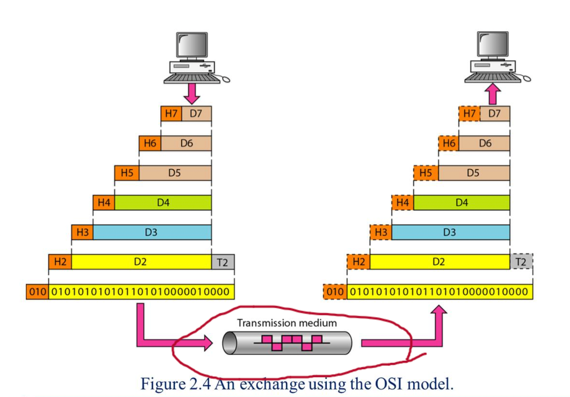
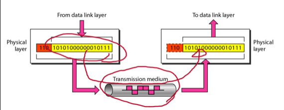
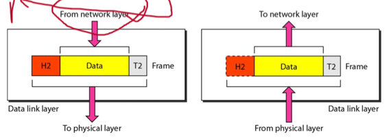
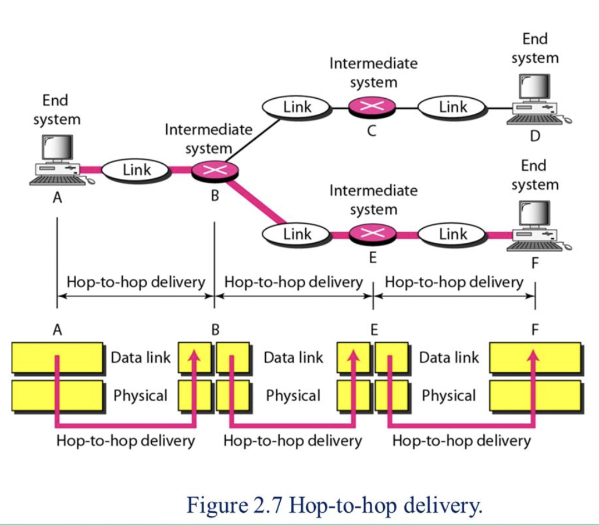
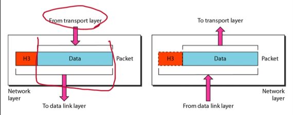

충남대학교 컴퓨터공학과 김상하 교수님의 "데이터 통신" 강의를 필기한 내용입니다.
다소 잘못된 내용과 구어적 표현 이 포함되어 있을 수 있습니다.
Protocol
- Protocol : 약속, 규칙 - 통신을 하려면 나혼자만 하는게 아니고 누군가 상대방이 있어야 하기 때문에 그 상대방과 이런식으로 통신을 하자고 약속을 한 것을 프로토콜이라고 하는 것
- Standards : Protocol은 그냥 규칙, 약속이기 때문에 많은 프로토콜들이 만들어질 수 있다. 하지만 이 프로토콜들이 전부 표준이 되는 것은 아님 - 프로토콜중에 제일 성능이 좋은 것을 하나 골라 표준으로 정하고 대부분의 사람들이 지키도록 만든 프로토콜이 스탠다드인 셈
- Algorithm : 프로토콜을 알고리즘이란 말하고 섞어서 쓰기도 한다 - 알고리즘은 문제를 풀기 위한 기법인데 프로토콜은 컴퓨터들간의 양방의 문제를 풀기 위한 기법이므로 알고리즘이라는 말과 유사한 의미를 가진 셈 - 일반적으로 말하는 알고리즘은 하나의 컴퓨터에서의 문제를 해결하는 방법인것과는 다르게 프로토콜은 여러대의 컴퓨터들간의 통신에서 일어날 수 있는 문제를 해결한다는 차이점이 있지만 문제를 해결한다는 점에서는 동일하기 때문
프로토콜의 구성요소
- Syntax : 프레임의 구조, 형식, 포맷, 즉, 첫 몇비트는 뭐고 그다음 몇비트는 뭐고 이런식으로 통신하는데 사용되는 프레임의 틀이라고 생각하면 됨
- Semantics : 얘는 Syntax로 표현된 형식, 포맷이 어떤 의미를 가지는 지 알려준다 - 즉, 하나의 프레임을 어떻게 자르는 지를 규정하는 것이 Syntax라면, 그 자른 부분들을 어떻게 사용할것인지를 명시하는 것이 Semantics인 것
- Timing : 얘는 flow control에서처럼 송수신 타이밍을 말한다 - 통신이라는 것이 쌍방이기 때문에 아직 수신자가 받을 준비가 안됐으면 보내면 안되는 등의 통신에 참여한 놈들끼리 이런 시간적인 약속또한 하는 것
Network Model(Architecture)
- 통신을 하기 위한 소프트웨어를 만드는 일은 그 양이 너무 크고 방대하기 때문에 이것 전체를 한꺼번에 개발하는 것은 불가능하다
- 그래서 이 전체 시스템을 여러 계층으로 쪼개어서 분업하자는 생각이 나오게 된 것 - 이것에 네트워크 계층의 시작이다
- 따라서 사람들을 자기 분야의 계층만 연구하면 되고, 이것을 이어붙이기만 하면 전체 시스템이 완성되는 방향으로 네트워크 개발이 이루어지고 있다
- 이렇게 해서 완성된 모델은 OSI 7 layer라고 하는 지금은 잘 사용되지 않지만 그래도 이 네트워크 계층이라는 개념의 근간을 이루고 있는 선언적인 시스템과
- 인터넷 네트워크의 표준인 TCP / IP가 있다
Layered Architecture
- 위에서도 말했지만 아주 크로 방대한 것을 계층적으로 잘라 각각을 개발하고 이어붙이는 기법 을 말하는데
- 일단 Layered Architecture(계층적 구조) 라는 것은 다음과 같은 말이다 - 상위계층에서는 하위계층의 기능을 사용할 수 있지만, 하위계층에서는 상위계층의 기능들을 사용하지 못함
- 이 계층들을 구현한 것을 모듈(module) 이라고 한다
- 그리고 이것을 이어 붙이는 것은 인터페이스(Interface) 라는 것을 사용한다 - 얘는 계층들을 이어주는 다리라고도 생각할 수 있으며 인터페이스가 존재함으로써 하나의 계층이 내부적으로도 수정되어도 인터페이스만 동일하다면 이 계층을 사용하는 다른 계층은 수정할 필요가 없다는 장점이 존재한다 - 마치 OOP에서의 추상화처럼
- 여기서 Peer-to-Peer통신이라는 것은 계층간의 통신을 말한다.
- 여기서 계층간의 통신이라는 것은 진짜로 계층간에 회선이 연결되어 계층끼리 통신한다는 소리가 아니다

- 위의 그림에서 보이는 것 처럼 계층x에서 하위계층으로 어떤 패킷을 내려보내면 다른station의 해당 계층x에서도 동일한 패킷을 받으므로 계층간 통신을 하는 것으로 간주한다는 것
- 그리고 다른계층에서 어떤일이 일어나는지는 전혀 상관할 바가 아니기 때문에 그냥 전선 하나 띡 이어져 있는것처럼 생각해도 된다는 소리이다
- 이렇게 함으로써 얻을 수 있는 장점은 station간의 통신이라는 거대한 문제를 계층간 통신이라는 작은 문제들로 나눠서 해결하게 되므로 더 쉬워진다는 것이다
- 위의 그림에서 볼 수 있듯이 하나의 계층은 상위계층에서 뭔가 전달받으면 그것 전체를 그냥 데이터로 간주해 거기다가 자신의 헤더나 그런것들을 붙여 하위계층으로 내려보내는 거고 하위계층에서 전달받으면 거기에서 상대방이 붙인 헤더만 떼어서 상위계층으로 올려보내는 작업만을 한다
OSI Model
- IBM이 개발해 표준으로 채택된 모델
Physical Layer

- 얘는 이제 최하위 계층으로 상대방의 Physical layer로 최대한 오류가 적게 나는 방법으로 전송하는 것에만 신경쓴다 - 오류가 안난다는 말이 아니고 오류를 최대한 줄여 상대방이 이해할수는 있게
- 즉 어떻게 비트들을 인코딩하여 보내고 그렇게 받은 비트들을 어떻게 디코딩하는지에만 집중하는 계층이다
Data Link Layer

- Data Link Layer의 역할은 Reliable Control 을 수행하는 것인데 이것은 다음처럼 다섯가지로 나눠질 수 있다
- Error Control : Error Detection하는 일
- Flow Control : Flow Error를 막기 위해 흐름을 제어하는 것
- Access Control : 패킷의 충돌을 막기 위해 제어하는 것
- Framing : 데이터의 크기가 너무 커지면 Redundancy Bit도 너무 커져서 프레임단위로 나누는 것
- Addressing : 물리주소를 할당하여 패킷이 제대로 도착할 수 있도록 하는 것
- 이 계층은 오류가 전혀 없는 완전무결한 통신, 즉, Reliable Control을 위한 작업만 수행한다

- 근데 여기서 Reliable Control이라는 것은 Hop-to-Hop Delivery에서의 완전무결한 전달을 의미한다.
- 즉, station하나에서 다른 station으로 갈 때 여러개의 정거장을 거치게 되는데 data link layer가 보장하는 reliable control이라는 것은 station에서 station까지의 완전무결한 통신이 아닌 정거장 하나에 대한 이동(이것을 Hop-to-Hop이라고 한다)에 대한 완전무결한 통신인 것이다
- 안타깝게도 컴네때 배우겠지만 이렇게 부분구간을 완벽하게 한다고 해서 전체구간이 완벽해지는건 아니랜다
Network Layer

- 데이터 링크 계층까지는 hop-to-hop통신을 보장하지만 네트워크 계층은 hop-to-hop통신을 넘어 결과적으로 Source-to-Destination까지의 통신을 보장한다
- 즉, 단순히 다음 정거장까지 무사히 가는것 뿐만 아니라 원하는 목적지까지 무사히 가는것을 목표로 하는 계층인 셈
TCP / IP
- 일단 얘는 Physical layer와 data link layer에 대해서는 별로 관심을 갖지 않는다
- 그리고 상위 3개의 계층인 Application layer, Presentation layer, Session layer를 하나로 묶어 Application layer로 퉁치고
- 그 아래 계층인 Transport layer로 TCP를 사용하며
- 또 그 아래 계층인 Network layer로 IP를 사용하는 프로토콜을 의미한다
- 그리고 이런 IP 모듈을 사용하는 통신망에 연결했을 때를 우리가 인터넷에 연결되었다 라고 하는 것
- TCP / IP는 OSI 7 layer보다 먼저 나왔다 - 그래서 상위 3개의 계층이 통합된게 아니라 사실은 분리되지 못한셈임
- OSI가 더 구조적으로 이상적인 모습을 하고 있지만 결국에는 TCP / IP에 밀려 사용되지 않았다 - 구조적으로 분리하는 것이 더 알아보기 쉽고 좋지만 그만큼 성능에의 하락이 존재하기 때문
- 그리고 물리계층과 데이터 링크 계층에 대해 관심을 갖지 않는다는 것은 어느것을 써도 유연하게 연결이 가능하다는 의미이기도 하다 - 물리계층과 데이터 링크 계층을 어느걸 써도 IP에만 연결되면 인터넷에 연결된 것이라고 하게 된다